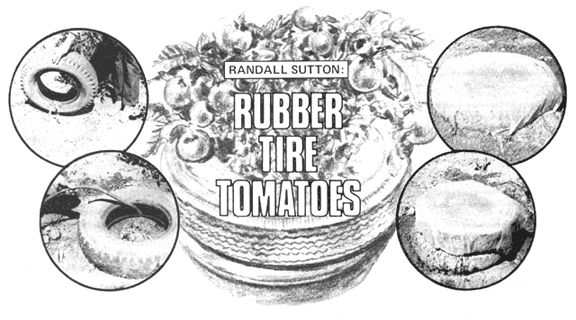

You don't need an expensive cold frame or greenhouse in which to grow plump, beautiful red-ripe tomatoes . . . over an extended season. All you really need-says Randy Sutton-are a few worn-out old tires and some throwaway plastic clothes bags!
Getting a handle on the art of growing tomatoes can be pretty difficult when you have to contend with wind, rain, or a cool climate . . . and up here in Oregon's coastal rain forest, we receive our share of all three.
Our neighbors, however, have devised a method for successfully growing tomatoes in just such conditions. What they do is use old rubber tires-obtained free from service stations-and leftover plastic film (such as dry cleaners put around clothes) to make a combination greenhouse/wind protector that virtually ensures a bumper crop every year. Here's their exact procedure:
First, in a sunny location, lay out one tire for each plant you want to grow. Then, using a stick, scratch a line around it in the dirt. Remove the tire and till compost or fertilizer deeply into the soil inside the circle.
Next, scoop out a shallow tire-shaped depression (a couple of inches deep) in the ground that you've tilled and fertilized. Plant two or three seeds a half-inch deep in the center of the circle. (If you're transplanting seedlings, bury them up to the first set of leaves . . . this'll permit each plant to send out feeder rootlets from its stem.)
I might point out that weeds dearly love this gardening system too, and that-for this reason-you'd do well to mulch around your seeded area with cut-up inner tubes, wood chips, tar paper, straw, or whatever mulching materials you can scrounge for free.
Now. Place the tire around your planting so that it nestles comfortably in the depression you've made for it. Then fill the inside bottom of the rim to overflowing with water (but be careful not to get too much on your plants or seeds).
Next, cover the tire with a big, clear piece of scrap plastic, and tuck the edges of the film tightly under the tire's bottom.
Finally, just scoop some soil firmly against the sides of the wheel to help hold the plastic down and to provide additional insulation. That's all there is to it.
What does the tire-and-plastic enclosure accomplish? Three things. It serves as [1] a cutworm collar, [2] a windbreak, and [3] a miniature solar greenhouse. During the day, the black rubber absorbs heat from the sun's rays (even, to some extent, when it's cloudy), and transfers that thermal energy to the water inside the rubber doughnut's rim. At night, the heated liquid then slowly releases its warmth to the air surrounding the plant. Thus, conditions of temperature and humidity (and pest exclusion) are maintained which tend to foster rapid-and healthy-plant growth.
You'll need to add little water to your "greenhouse" as long as the plastic roof is covering the tire. Nonetheless, do check the water level in the tire periodically and "top off" the sidewall reservoir whenever it gets below half full.
When your tomato seedling reaches the "roof", simply [A] remove the plastic, [B] stack a second tire on top of the first, and [C] put the plastic over the second tire (tucking it between the two to secure the covering in place).
It's probably a good idea to remove the plastic roof altogether when blossoms begin to appear, so that bees can get at them. Leave the two tires standing, however, to serve as a windbreak.
Later on-as your tomato plant reaches its full size and begins to bear fruit abundantly-you'll discover that the double tire "trellis" holds the fruit off the ground and thereby prevents rot.
So far, we've seen this method used only for tomatoes . . . but it brings such fabulous results with these plants that we plan to try the same idea for starting other vegetables as well (green peppers and eggplant in particular). Whitewalls, I would think, should produce equally fine results . . . but-because an all-black exterior will probably absorb more heat-we plan to turn whitewalls dark side up, just to be safe.
Rubber tire tomatoes? See you in back of the service station!
|
 |
|
|